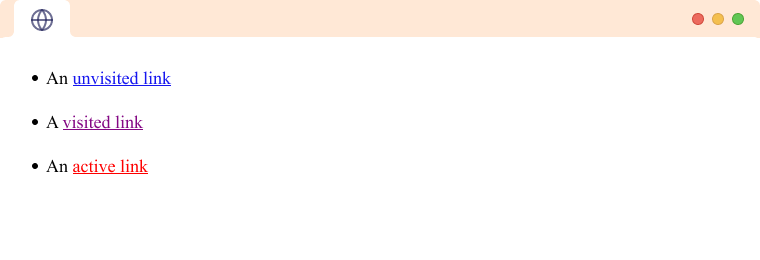
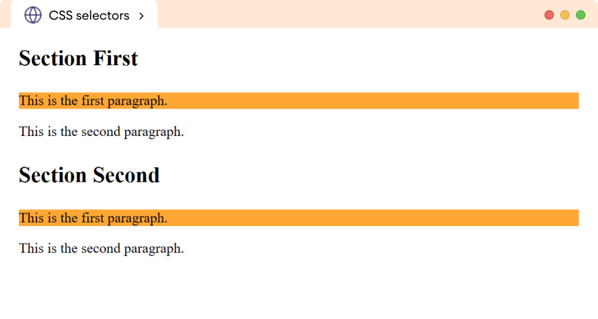
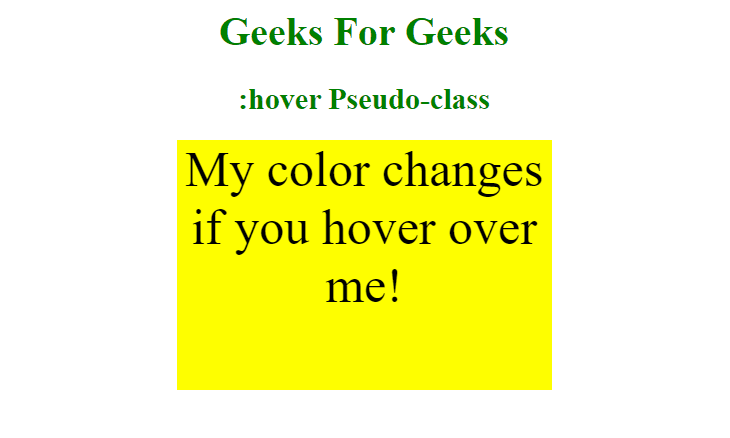

Lists

Lists are a way to group related items together. There are two main types of lists in HTML:
- Ordered Lists (ol)
- Unordered Lists (ul)
Each list item is defined with the <li> tag.
- Ordered List
- A list where the items are numbered.
- Unordered List
- A list where the items are bulleted.
Linking
Links are created using the <a> tag. You can link to other pages, sections, or external websites.
Example of a link to an external site: Visit Example
- Anchor Tag
- The HTML element used to create links.
- Target Attribute
- Specifies where to open the linked document.
Formatting

HTML provides various tags for formatting text, such as <b> for bold and <i> for italic.
Using these tags helps to emphasize certain parts of your content.
- Bold
- Text that is thicker and darker.
- Italic
- Text that is slanted to the right.
Selectors
CSS selectors are used to select the elements you want to style. There are several types of selectors:
- Element Selector
- Class Selector
- ID Selector
- Element Selector
- Selects elements by their tag name.
- Class Selector
- Selects elements with a specific class attribute.
Pseudo-Classes
Pseudo-classes are used to define the special state of an element. For example, you can change the style of a link when it is hovered over.
- :hover
- Applies styles when the user